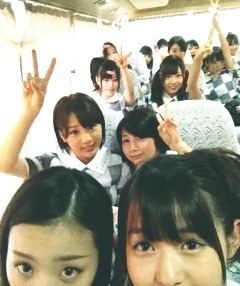

| 2012/07 28 Sat | 189回目*marika |
いつも読んでくださってる方、
初めて読んでくださった方、
コメントしてくださった方、
ありがとうございます‼
「CBCラジオまつり2012」

あーーーーー
本当に楽しかったーーーー‼
めちゃくちゃ暑かったですよね。
ライブまで長い間待っててくださって
本当にありがとうございました><‼
披露した曲
♪おいでシャンプー
♪ぐるぐるカーテン
♪狼に口笛を
♪走れ！Bicycle
♪会いたかったかもしれない
公開リハの時間帯がいちばん
気温が高くて大変でしたが、
本番は風が吹いていて涼しかったから
全力で踊れて最高だった。
汗はんぱなかったわ笑
もうぐちゃぐちゃ

ライブは髪型気にしてられないね

実は熱があって体調が
あまり良くなかったのです。
でも会場の熱気と盛り上がりと
みなさんの笑顔で
ライブでは熱なんて
吹っ飛んじゃいましたっっ


メンバー、スタッフさん
ご心配ご迷惑おかけしました。
みんな、協力してくれてありがとう; ;
そして、みなさんのおかげだよーーー
名古屋のみなさん本当に本当に
ありがとうーーーーー
だいすきだいすき

**********
 BLTのTシャツ買ったよー♡
BLTのTシャツ買ったよー♡
万理華ならどうアレンジする？
 ダメージ入れたりするかな
ダメージ入れたりするかな
 乃木坂の曲で
乃木坂の曲で
好きな曲ベスト3てなに？
決められないんだよねー...
今回の3rdのカップリングだったら
♪涙が悲しみだった頃
本当に良い曲だし...
♪音の出ないギター
めーーーーっちゃすき。
かっこよすぎる‼ロックロック

若月とななせかっこよすぎるのよ
やばいのよもう

明日の放送楽しみだねー

一番よく一緒に
食事に行くメンバーは？
ねね‼笑
夏休みの宿題は進んでる？
 まりかって人見知り？
そーでもないかも...よ
まりかって人見知り？
そーでもないかも...よ
 名古屋の食べ物は何がすき？
みそかつ！！！！！！！！
名古屋の食べ物は何がすき？
みそかつ！！！！！！！！
さっきみそかつ食べた！
あ、きしめんもすき！！！！
*********
秒殺!!
ゆるーく

(
 誰かツッコんでくれ)
誰かツッコんでくれ)
誰かツッコんでくれ)
...何か...何かがおかしいんだ‼笑
*****

これは変顔じゃないもんねー

また写真載せますー^^
体調万全でいけるように
次も頑張らなきゃ。
明日は新技術発表会です。
長崎イベントメンバーがんばれ‼
ではおやすみなさい☆
まりか
コメント(144)
2012/07/28 22:12